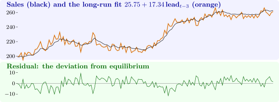

12.6 Unit roots and cointegration in software
Software 12.6.1 (The Dickey–Fuller distributions by simulation). A fast function for a single \(t\) ratio, used here and in the next panels, and \(20\,000\) simulated random walks of length \(250\):
> tstat <- function(y, X, j) { # t ratio of coefficient j, fast
+ XtXi <- solve(crossprod(X)); b <- XtXi %*% crossprod(X, y)
+ e <- y - X %*% b; s2 <- sum(e^2) / (length(y) - ncol(X))
+ b[j] / sqrt(s2 * XtXi[j, j])
+ }
> set.seed(1); n <- 250; R <- 20000; tt <- 1:(n - 1)
> sims <- t(replicate(R, {
+ y <- cumsum(rnorm(n)); dy <- diff(y); yl <- y[-n]
+ c(none = tstat(dy, cbind(yl), 1), constant = tstat(dy, cbind(yl, 1), 1),
+ trend = tstat(dy, cbind(yl, 1, tt), 1))
+ }))
> round(apply(sims, 2, quantile, c(0.01, 0.05, 0.10)), 2)
none constant trend
1% -2.57 -3.47 -4.01
5% -1.97 -2.88 -3.45
10% -1.63 -2.58 -3.15
> round(rbind(mean = colMeans(sims), sd = apply(sims, 2, sd)), 2)
none constant trend
mean -0.42 -1.53 -2.19
sd 1.00 0.85 0.76
> round(qnorm(c(0.01, 0.05, 0.10)), 2)
[1] -2.33 -1.64 -1.28
Reading the output. The simulated \(5\%\) points, \(-1.97\), \(-2.88\) and \(-3.45\), are close to the asymptotic values \(-1.95\), \(-2.86\) and \(-3.41\) of the table in Section 12.3; the small differences are the finite-sample corrections for \(n = 250\). The distributions are centred well to the left of zero: with a constant the mean is \(-1.53\), and with a trend \(-2.19\), which is why the normal \(5\%\) point \(-1.64\) is so badly wrong. tstat computes \(b_j/\bigl (s\sqrt {(X'X)^{-1}_{jj}}\bigr )\) directly, which is much faster than summary(lm()) and matters when the regression is repeated thousands of times.
Stata: dfuller y, trend lags(0) prints these critical values with MacKinnon’s approximate \(p\)-value. EViews: View \(\to \) Unit Root Test, choosing the deterministic terms.
Software 12.6.2 (Granger and Newbold’s experiment). For each sample size, \(5000\) pairs of independent random walks are generated; \(Y\) is regressed on \(X\) in levels and in differences:
> set.seed(3)
> gn <- function(n, R = 5000) {
+ s <- replicate(R, {
+ y <- cumsum(rnorm(n)); x <- cumsum(rnorm(n)); X <- cbind(1, x)
+ e <- y - X %*% solve(crossprod(X), crossprod(X, y))
+ c(reject = abs(tstat(y, X, 2)) > 1.96,
+ R2 = 1 - sum(e^2) / sum((y - mean(y))^2),
+ DW = sum(diff(e)^2) / sum(e^2),
+ reject.diff = abs(tstat(diff(y), cbind(1, diff(x)), 2)) > 1.96)
+ })
+ rowMeans(s)
+ }
> tab <- sapply(c(50, 100, 200, 400), gn)
> colnames(tab) <- paste0("n=", c(50, 100, 200, 400)); round(tab, 3)
n=50 n=100 n=200 n=400
reject 0.665 0.759 0.838 0.884
R2 0.241 0.242 0.240 0.243
DW 0.335 0.174 0.089 0.045
reject.diff 0.053 0.055 0.048 0.050
Reading the output. In levels, the nominal \(5\%\) test rejects the true hypothesis of no relation \(67\%\) of the time with \(n = 50\), and \(88\%\) with \(n = 400\): more data make it worse, as Theorem 12.2.5(ii) predicts. The average \(R^2\) stays near \(0.24\) whatever \(n\) is, part (iii), and the average Durbin–Watson statistic halves each time \(n\) doubles, the rate \(1/n\) of part (iv). In differences, the regression behaves exactly as the classical theory says: it rejects \(5\%\) of the time.
Stata and EViews have no built-in command for this; the experiment is a loop over drawnorm and regress in Stata, or a program with nrnd and @cumsum in EViews.
Software 12.6.3 (ADF tests on sales and a leading indicator). R’s BJsales data are \(150\) consecutive values of a company’s sales, together with a leading indicator BJsales.lead, from Box and Jenkins’ book on time-series analysis (their Series M). Test both in levels with a trend, and in differences with a constant, for \(0\) to \(3\) lagged differences:
> adf <- function(y, p = 0, det = "trend") { # ADF t ratio, p lags
+ dy <- diff(y); yl <- y[-length(y)]; tt <- seq_along(dy)
+ L <- if (p > 0) embed(c(rep(NA, p), dy), p + 1)[, -1, drop = FALSE]
+ X <- cbind(yl, if (det != "none") 1, if (det == "trend") tt, L)
+ ok <- complete.cases(X)
+ tstat(dy[ok], X[ok, , drop = FALSE], 1)
+ }
> s <- as.numeric(BJsales); l <- as.numeric(BJsales.lead)
> tab <- sapply(0:3, function(p) c(sales = adf(s, p), lead = adf(l, p),
+ d.sales = adf(diff(s), p, "const"), d.lead = adf(diff(l), p, "const")))
> colnames(tab) <- paste0("p=", 0:3); round(tab, 2)
p=0 p=1 p=2 p=3
sales -0.99 -1.32 -1.61 -1.79
lead -3.28 -2.03 -1.77 -1.58
d.sales -8.77 -5.76 -4.64 -3.72
d.lead -19.53 -11.82 -9.40 -6.76
Reading the output. In levels, no statistic for sales comes near the \(5\%\) trend critical value \(-3.41\), so a unit root is not rejected. For the leading indicator the value with no lags, \(-3.28\), is close to it, but once lagged differences are added it falls to between \(-1.6\) and \(-2.0\): the simple test was distorted by autocorrelation in the differences of the indicator, and the ADF test does not reject. In differences every statistic is far below the constant critical value \(-2.86\). Both series are therefore treated as \(I(1)\). The function adf builds the regressors of Theorem 12.3.1 with embed and returns the \(t\) ratio of \(Y_{t-1}\).
Stata: dfuller sales, trend lags(2), and dfuller D.sales, lags(2). EViews: View \(\to \) Unit Root Test, with “Level” or “1st difference” and the lag length chosen automatically by the Schwarz criterion.
Software 12.6.4 (The Engle–Granger cointegration test). Box and Jenkins found that sales respond to the indicator with a delay of three periods. Regress sales on the indicator three periods earlier and test the residuals; then, for contrast, test the four European stock indices of Software 11.7.6 for cointegration:
> n <- length(s); y <- s[4:n]; x <- l[1:(n - 3)] # sales on lead 3 back > cr <- lm(y ~ x); coef(cr); summary(cr)$r.squared (Intercept) x 25.75020 17.34257 [1] 0.9634752 > e <- resid(cr) > round(sapply(0:3, function(p) adf(e, p, "none")), 2) [1] -8.10 -4.95 -4.06 -3.15 > d <- log(EuStockMarkets) > e4 <- resid(lm(d[, "DAX"] ~ d[, "SMI"] + d[, "CAC"] + d[, "FTSE"])) > round(sapply(0:3, function(p) adf(e4, p, "none")), 2) [1] -2.92 -2.96 -3.10 -3.24
Reading the output. The cointegrating regression is \(\widehat {\text {sales}}_t = 25.75 + 17.34\,\text {lead}_{t-3}\), with \(R^2 = 0.963\). With \(N = 2\) the \(5\%\) critical value is \(-3.34\), and the residual ADF statistics are \(-8.10\), \(-4.95\) and \(-4.06\) for \(0\), \(1\) and \(2\) lags, and \(-3.15\) with \(3\); the evidence of cointegration is strong except with the most generous lag length, where power is lost. The long-run gain of \(17.3\) agrees with the long-run gain of Box and Jenkins’ transfer-function model, approximately \(4.82/(1 - 0.72) = 17.2\). Figure 13 shows the two series and the residual. The stock indices tell the opposite story: their residual statistics, \(-2.9\) to \(-3.2\), are nowhere near the \(N = 4\) critical value \(-4.10\). Four major stock markets, though highly correlated, do not share a common long-run equilibrium in these years, which is what efficient markets would lead one to expect.
Stata: regress sales L3.lead, predict v, resid, dfuller v, noconstant lags(1), comparing with the Engle–Granger critical values (the egranger package does this automatically); vecrank for Johansen’s test. EViews: View \(\to \) Cointegration Test \(\to \) Single-Equation Cointegration Test, method Engle-Granger.

Software 12.6.5 (The error correction model). The second Engle–Granger step: regress \(\Delta \text {sales}_t\) on \(\Delta \text {lead}_{t-3}\) and the lagged residual, then add one lag of each difference:
> dy <- diff(y); dx <- diff(x); ec <- e[-length(e)] > ecm <- lm(dy ~ dx + ec); round(summary(ecm)$coef, 4) Estimate Std. Error t value Pr(>|t|) (Intercept) 0.3237 0.0309 10.4665 0 dx 4.5341 0.1054 43.0180 0 ec -0.2455 0.0082 -29.9267 0 > dyl <- c(NA, dy[-length(dy)]); dxl <- c(NA, dx[-length(dx)]) > ecm2 <- lm(dy ~ dx + dxl + dyl + ec); round(summary(ecm2)$coef, 4) Estimate Std. Error t value Pr(>|t|) (Intercept) 0.1734 0.0347 5.0021 0.0000 dx 4.6647 0.0919 50.7776 0.0000 dxl 0.3895 0.1244 3.1312 0.0021 dyl 0.3272 0.0536 6.1094 0.0000 ec -0.1183 0.0186 -6.3442 0.0000 > c(AIC(ecm), AIC(update(ecm, subset = -1)), AIC(ecm2)) [1] 130.8384 128.2626 80.9936
Reading the output. In the simple model the impact effect of a unit change in the indicator is \(4.53\), much smaller than the long-run effect \(17.34\), and \(26\%\) of a disequilibrium is removed each period. Adding the lagged differences lowers the AIC from \(128.3\) to \(81.0\) on the same \(145\) observations (the middle value refits the simple model without its first observation, so the comparison is fair). The dynamic model has a large lagged \(\Delta \text {sales}\) coefficient, \(0.33\), and the speed of adjustment falls to \(\hat \lambda = 0.118\), a half-life of \(\log 0.5/\log (1 - 0.118) = 5.5\) periods. The adjustment coefficient is negative with a \(t\) ratio of \(-6.3\), more evidence of cointegration. The intercept is explained at the end of Section 12.5: with \(\hat \theta = 17.34\), \(\hat \beta _0 = 4.53\) and mean \(\Delta \text {lead} = 0.0245\), \((\hat \theta - \hat \beta _0)\overline {\Delta X} = 0.313\), against the estimate \(0.324\). The large gap between impact and long-run effects is the decisive evidence against the common factor restriction, by the last part of Theorem 12.5.1.
Stata: regress D.sales DL3.lead L.v. EViews: ls d(sales) c d(lead(-3)) v(-1), where v holds the residuals of the cointegrating regression.
Questions on this section
Stuck on something here? Ask below and it stays attached to this topic.